Container To String.vi¶
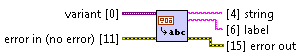Recursively converts almost* anything to human-readable** string. Result is as much compatible with Python built-in repr function as possible. This means that in most of the cases, resulting string can be directly procesed by Python interpreter, to get an object which corresponds to the one which was passed as an input argument to the VI.
Additionally, VI provides label assigned to the wire that provides data to the input.
[*] Following data types are not supported: numerical types with units.
[**] Except for Variant type which is flattened to non-readable string.
- variant (Input, String)
- Data to be converted into string.
- string (Output, String)
- String representing input data.
- label (Output, String)
- Label assigned to the wire that provides data to the variant input.
- error in (Input, Error Cluster)
- This input provides standard error in functionality.
- error out (Output, Error Cluster)
- This output provides standard error out functionality.
Basic Usage¶
| Code | Result | Comment |
|---|---|---|
 |
123.000000 | Input of the VI is a Variant. Whatever you connect to this input must be casted explicitely... |
 |
123.000000 | ...or implicitely. |
 |
3.750000 | VI uses default formatting for all numerical data types. Data types with units are not supported. |
| 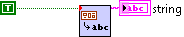 | True | Boolean values are represented by False and True keywords known from Python and not FALSE and TRUE as it can be observed in LabVIEW. |
| 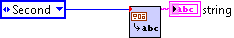 | Second | In case of enums, VI shows names of the constants... |
| 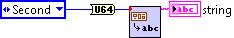 | 1 | ...of course, unless you cast enum to numerical type. |
| 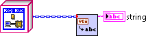 | LabVIEW Object | Objects are represented by names of their classes. |
| 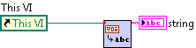 | 0x4A000031 | References are shown as memory locations (32-bit hexadecimal addresses) which they correspond to. |
| 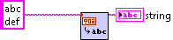 | 'abc\ndef' | Special characters in the strings are escaped. Quotation marks are added. This conforms behaviour of repr function in Python. |
| 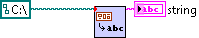 | 'C:\' | Paths as considered the same way as strings. |
| 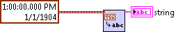 | 1904-01-01 12:00:00.000000 | Following default formatting string is applied to timestamps: %^<%Y-%m-%d %H:%M:%S%06u>TMore details can be found here. |
| 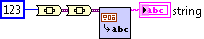 | non-printable | Variants are flattened to strings the same way as LabVIEW built-in function Variant To Flattened String would do. |
| 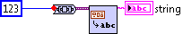 | non-printable | Double occurence of To Variant function can be substituted by To Nested Variant.vi. |
| 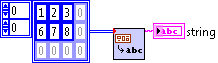 | [[1, 2, 3], [6, 7, 8]] | Arrays are displayed row by row, the same way as nested lists in Python. |
| 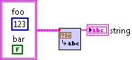 | {'foo': 123, 'bar': False} | Cluster, elements of which have non-empty labels is printed as a dictionary in Python. |
| 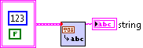 | {123, False} | Cluster, elements of which have empty labels is printed as a set in Python. |
| 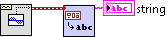 | [0.000000, 0.062791, 0.125333, ... -0.187381, -0.125333, -0.062791] |
In case of Waveforms, only data is converted to string. The same applies to Digital Waveforms and Digital Data types. Note that three dots on the left denote part of the string which hasn't been presented here, but is returned by the VI. |
Advanced Usage¶
| Code | Result | Comment |
|---|---|---|
| 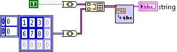 | [True, [[1, 2, 3], [6, 7, 8]]] | Heterogeneous arrays are supported too. Each element of such array must be a Variant. |
| 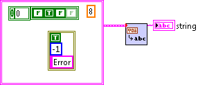 | {8.000000, {'status': True, 'code': -1, 'source': 'Error'}, [False, True, False]} | Nested clusters correspond to nested dictionaries and sets in Python. Note that labels of the elements can be hidden, but will still appear in the string if they are non-empty. |